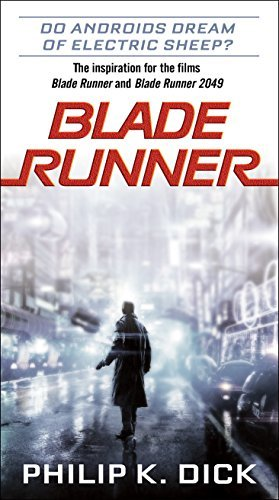

A LONE ASTRONAUT. AN IMPOSSIBLE MISSION. AN ALLY HE NEVER IMAGINED. RYLAND GRACE is the sole survivor on a desperate, last-chance mission—and if he fails, humanity and Earth itself will perish. Except that right now, he doesn’t know that. He can’t even remember his own name, let alone the nature of his assignment or how to complete it. All he knows is that he’s been asleep for a very, very long time. And he’s just been awakened to find himself millions of miles from home, with nothing but two corpses for company. His crewmates dead, his memories fuzzily returning, Ryland realizes that an impossible task now confronts him. Hurtling through space on this tiny ship, it’s up to him to puzzle out an impossible scientific mystery—and conquer an extinction-level threat to our species. And with the clock ticking down and the nearest human being light-years away, he’s got to do it all alone. Or does he? An irresistible interstellar adventure as only Andy Weir could imagine it, Project Hail Mary is a tale of discovery, speculation, and survival to rival The Martian—while taking us to places it never dreamed of going.

On a distant planet, a team of scientists are conducting surface tests, shadowed by their Company-supplied ‘droid — a self-aware SecUnit that has hacked its own governor module, and refers to itself (though never out loud) as “Murderbot.” Scornful of humans, all it really wants is to be left alone long enough to figure out who it is (and to watch its favorite show in its downtime.) But when a neighboring mission goes dark, it’s up to the scientists and Murderbot to get to the truth. Then, In Artificial Condition Murderbot teams up with a Research Transport vessel named ART (you don’t want to know what the “A” stands for), and together, they infiltrate the mining facility where Murderbot went rogue to try to understand its past. What it discovers will forever change the way it thinks…